Contents
How to achieve specific results
Preventing hyphenation
One can prevent hyphenation inside a frame by passing nothypenated option to align. It is also a good idea to add verytolerant and stretch options.
-
\setuppapersize[A5] \startcombination[2*2] {\framed [width=5cm, align={flushleft}] {\input ward \endgraf}} {flushleft} {\framed [width=5cm, align={flushleft,nothyphenated,verytolerant}] % maybe also stretch {\input ward \endgraf}} {flushleft,\crlf nothyphenated, \crlf verytolerant} {\framed [width=5cm, align={flushright,nothyphenated,verytolerant}] % maybe also stretch {\input ward \endgraf}} {flushright,\crlf nothyphenated, \crlf verytolerant} {\framed [width=5cm, align={width,nothyphenated,verytolerant}] % maybe also stretch {\input ward \endgraf}} {width,\crlf nothyphenated, \crlf verytolerant} \stopcombination
- 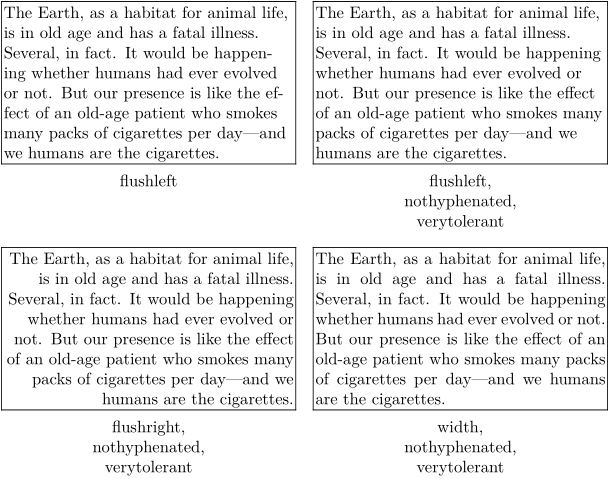
Specify the width no longer than needed
I want to specify the maximum width of a frame. If the size of the box is smaller than the maximum width, I want a tight box. This can be done using the autowidth=force option to framed.
-
\setuppapersize[A5] \defineframed [tightframed][width=5cm,autowidth=force,align=middle] \tightframed{Small} \tightframed{A really really long line that is split at 5cm}
- 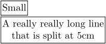
Ruled Frames
\framed allows you to specify specific edges to be ruled.
As an alternative to frame=on (the default), one can specify
topframe=on, etc.
Note that, as the default is to draw a complete frame,
it is necessary to either specify the state (on/off) for all four edges
or include the keyword frame=off.
-
\setuppapersize[A5] \framed[frame=off,topframe=on,leftframe=on]{A fancy title}
- 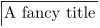
The thickness of the frame rule can be specified using rulethickness=
-
\setuppapersize[A5] \framed[frame=off,leftframe=on,rulethickness=2pt]{\tfa\bf A fancy title}
-

Rounded Corners
\framed allows you to have round corners with corner=round. There are also other possibilities if you want round corners but not at all places by giving an appropriate number to corner=.... This example is taken from core-rul.tex and each frame is typeset using
\framed[corner=....,frame=on]{...}
- 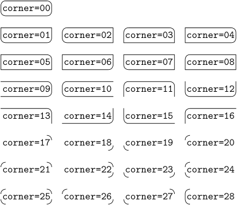
- You can only fill the frame with a background color if the corner shape is closed. Otherwise, the backgroundcolor option will be silently ignored.
Coloring frame background and framed text
First you have to turn on colors with \setupcolors[state=start]. Then you can define the background and foreground (=text) colors:
\framed[background=color,backgroundcolor=....,foreground=color,foregroundcolor=...]{...}
If you want to make the frame itself disappear, add a frame=off to the setups.
\setupcolors[state=start] \framed [background=color,backgroundcolor=darkblue, foreground=color,foregroundcolor=white] {\ssx \bf Bold white on dark blue} |
|
|
\framed [background=color,backgroundcolor=yellow, frame=off] {\tfx Who needs highlighter pens, anyway?} |
For filling frames with offset you have to add options frameoffset=..., backgroundoffset=...
\framed [frame=on, corner=0, frameoffset=10pt, framecolor=black,background=color, backgroundcolor=darkgreen, backgroundoffset=10pt, foreground=color,foregroundcolor=white] {\tfxx \bf Rounded corners with offset} |
See the Color article for more information on available colors and color usage.
Shaded background for part of a displayed equation
To highlight part of a formula, you can give it a gray background using \inmframed:
-
\setuppapersize[A5] \setupcolors[state=start] \def\graymath{\inmframed[frame=off, background=color, location=mathematics, backgroundcolor=gray, backgroundoffset=3pt]} \startformula \ln (1+x) =\, \graymath{x - \frac{x^2}{2}} \,+ \frac{x^3}{3}-\cdots. \stopformula
- 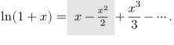
The \, adds a tiny bit of space to prevent the gray background from crowding the equals and plus sign.
Inline Frames
The command \inframed, similar to \framed, differs in the definition of the baseline:
-
\setuppapersize[A5] \framed[frame=off,width=10em,align=flushleft]{% Notice the difference between \framed{framed} and \inframed{inframed}, especially considering its effect on linespacing... }
- 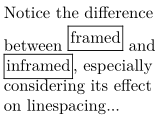
Dotted Frames
Using MetaPost:
\startuniqueMPgraphic{Label} path p; p := (0,0) -- (OverlayWidth,0) -- (OverlayWidth, OverlayHeight) -- (0, OverlayHeight) -- (0,0); draw p withpen pencircle scaled 1pt dashed withdots; setbounds currentpicture to boundingbox OverlayBox; \stopuniqueMPgraphic \defineoverlay[Label][\useMPgraphic{Label}] \def\DotPicture#1#2#3% {% \placefigure[][#3]{#2}% {% \framed[align={flushleft, low},% frame=off,% height=3in,% width=broad]% {% \externalfigure[#1]% [width=3in,% background=Label,% backgroundoffset=1ex]% }% }% }% \def\DotText#1% {% \framed[frame=off,% background=Label,% location=low]% {% #1 }% }% \starttext \DotPicture{cow.pdf}{All your base are belong to us}{SampleRef}% AAA \DotText{BBB} CCC \DotText{DDD} \stoptext
{kind=link}
Using TikZ:
\setuppapersize[A5] \usemodule[tikz]% \tikzstyle{block}=[rectangle,draw=black,text centered,style=dotted,inner sep=0pt] \def\Picture#1#2#3% { \placefigure[left][#3]{#2}% {% \tikzpicture% \node[block](init){\externalfigure[#1][width=3in]};% \endtikzpicture% }% }% \starttext \Picture{cow.pdf}{All your base are belong to us}{SampleRef} \stoptext
{kind=link}
Colorored horizontal stripe of full paper width
-
\definepapersize[sheet][width=120mm,height=60mm] \setuppapersize[sheet] \setuppagenumbering[location=] \setuplayout [width=110mm, backspace=5mm, topspace=5mm, header=5mm, headerdistance=5mm, footer=5mm, footerdistance=5mm] \showframe \setupbackgrounds[page] [background=color, backgroundcolor=lightgray] \startuniqueMPgraphic{whatever} fill OverlayBox leftenlarged BackSpace rightenlarged CutSpace withcolor OverlayColor; setbounds currentpicture to OverlayBox enlarged max(BackSpace,CutSpace); \stopuniqueMPgraphic \defineoverlay[whatever][\uniqueMPgraphic{whatever}] \starttext Here some text first. \framed[background=whatever,backgroundcolor=green,frame=off,width=\textwidth]{test} After, again some text. \stoptext
- 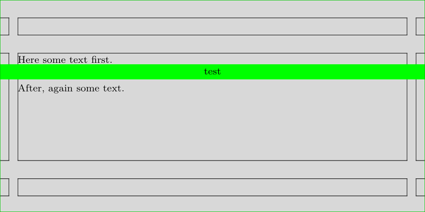
Width broad and local
Sometimes width must be adapted to a "local" \hsize
(the actual text area used by TeX to determine line breaks).
For example:
-
\setuppapersize[A5] \setuppapersize[A7,landscape][A7,landscape] \setupbodyfont[8pt,ss] \starttext \framed[width=broad]{} \startnarrower[left] \framed[width=broad]{} \dontleavehmode\framed[width=broad]{} \dontleavehmode\framed[width=local]{} \stopnarrower \blank \hsize.5\hsize \framed[width=broad]{} \startnarrower[left] \framed[width=broad]{} \dontleavehmode\framed[width=broad]{} \dontleavehmode\framed[width=local]{} \stopnarrower \stoptext
- 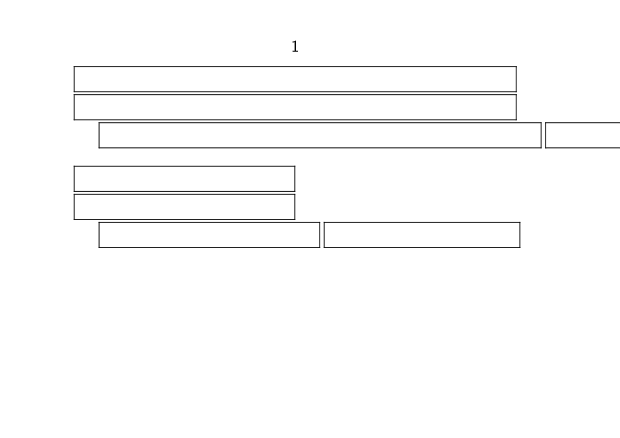
Here we use \setlocalhsize after \startitemize to setup the localhsize:
-
\setuppapersize[A5] \setuppapersize[A7,landscape][A7,landscape] \setupbodyfont[8pt,ss] \setupcolors[state=start] \setupframed[framecolor=blue] \showframe \starttext \framed[width=\hsize,align=middle]{width=hsize} \startitemize \setlocalhsize \item \framed[width=\hsize,align=middle] {width=hsize} \item \framed[width=broad,align=middle] {width=broad} \item \framed[width=local,align=middle] {width=local} \stopitemize \stoptext
- 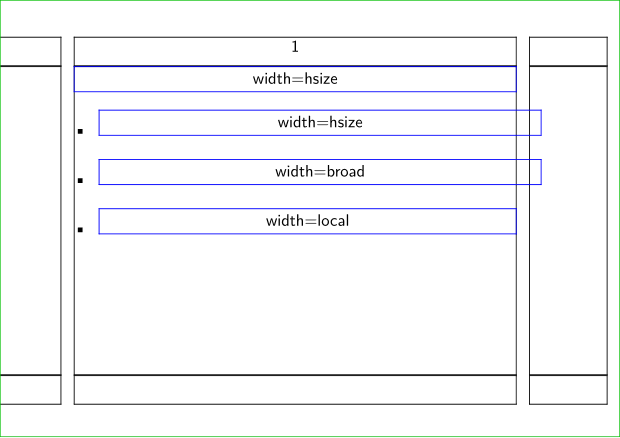
Spacing between frame and text
\framed comes with two different types of offsets:
one for the frame itself and another for the its content.
The parameters frameoffset and backgroundoffset
were already explained above in the section #Coloring frame background and framed text.
In addition, the parameter [strut=no] allows removal of the initial strut when framing text that is Verbatim with line breaks.
Content offsets
Beyond those there is another four dimensions that enable you to control
the safety distance of a \framed’s content by orientation.
Horizontally, loffset governs the left, roffset the right
offset;
the same goes for boffset for the bottom and toffset for
the top distance.
Their effects are explored in the following example (MkIV only).
Example
-
\def\offsetframe[#1]{% {\framed[ #1=1em, align=normal, width=5.3cm, height=5.3cm, ]{\tfx\input ward } }{\it#1} } \starttext \startcombination[2*2] \offsetframe[loffset] \offsetframe[roffset] \offsetframe[toffset] \offsetframe[boffset] \stopcombination \stoptext
- 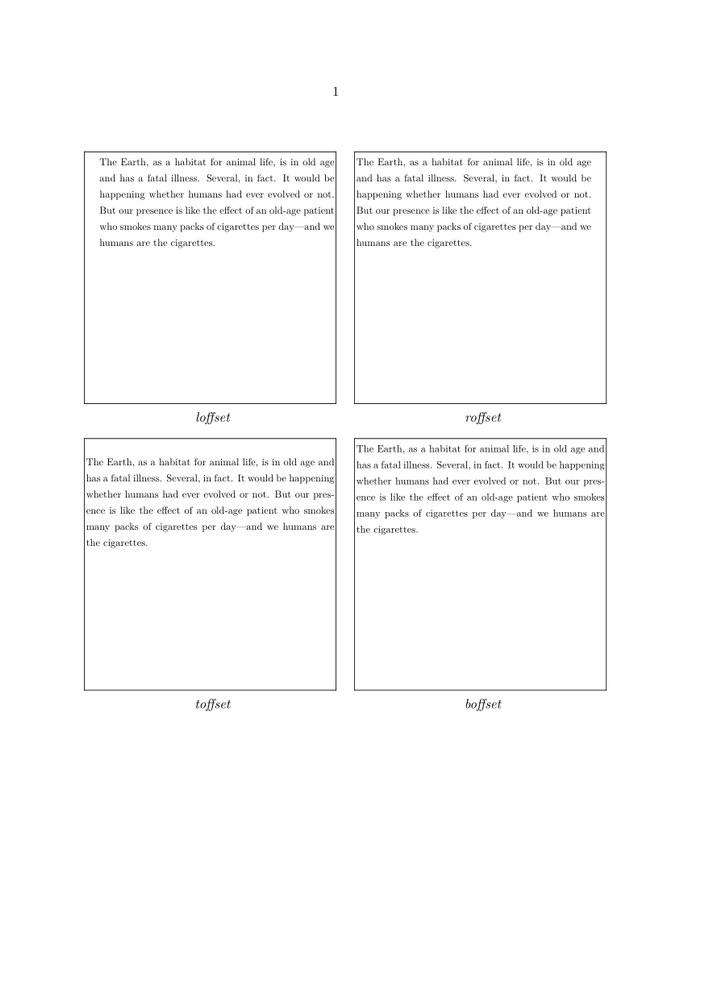
More offset parameters
Also, you can set up offset, which sets up all the [lrtb]offset parameters.
Here's a method to define a new parameter, call it hoffset, which sets up [lr]offset at the same time:
\setupframed [loffset=\framedparameter{hoffset}, roffset=\framedparameter{hoffset}, hoffset=\zeropoint]
Location parameter
-
demo \ruledhbox {A \framed[width=2cm,align=middle,location=hanging]{location\\equals\\hanging\strut} \framed[width=2cm,align=middle,location=depth] {location\\equals\\depth\strut} \framed[width=2cm,align=middle,location=height] {location\\equals\\height\strut} B} \vskip2cm \ruledhbox {A \framed[width=2cm,align=middle,location=low] {location\\equals\\low\strut} \framed[width=2cm,align=middle,location=line] {location\\equals\\line\strut} \framed[width=2cm,align=middle,location=high] {location\\equals\\high\strut} B} \vskip2cm \ruledhbox {A \framed[width=2cm,align=middle,location=top] {location\\equals\\top\strut} \framed[width=2cm,align=middle,location=bottom] {location\\equals\\bottom\strut} \framed[width=2cm,align=middle,location=lohi] {location\\equals\\lohi\strut} \framed[width=2cm,align=middle,location=middle] {location\\equals\\middle\strut} B} demo
- 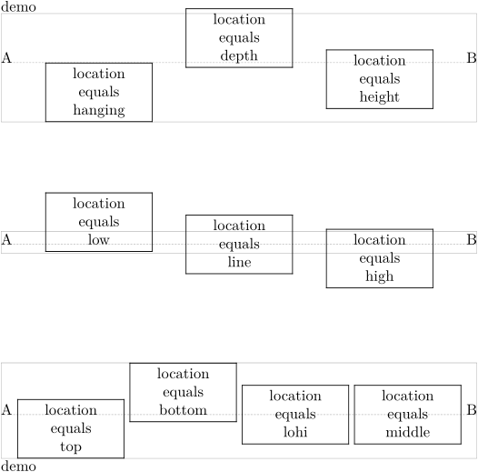
In order to understand, it can be helpful :
- to compare with basic \strutheight and \strutdepth of the line,
- to compare the effect on the parent box
- to compare the effect of the struct option which, with the location option, is key to control the position
-
\setuppapersize[A5] \setuplayout[backspace=5mm,topspace=1cm,header=0cm,footer=0cm,width=14cm] \defineframed [MonCadre] [width=1.75cm, align=middle, % rulethickness=2pt, % <== you can test offset=-rulethickness % offset=-2pt, % <== you can test offset=-rulethickness framecolor=darkred] \define[1]\DemoLoc{% \ruledhbox{% \blackrule[height=\strutheight,depth=0pt,width=3mm]% \blackrule[height=0pt,depth=\strutdepth,width=3mm]% \MonCadre [location=#1] {loqation\\\color[darkmagenta]{\bf #1}\\loqation}}~~} \setupbodyfont[10pt] \startbuffer \strut \DemoLoc{height} \dontleavehmode \DemoLoc{high} \dontleavehmode \DemoLoc{line} \dontleavehmode \DemoLoc{low} \dontleavehmode \blank[1cm] \strut \DemoLoc{hanging} \DemoLoc{top} \dontleavehmode \DemoLoc{lohi} \dontleavehmode % idem middle \DemoLoc{bottom} \dontleavehmode \DemoLoc{depth} \blank[1cm] \strut \DemoLoc{empty} \dontleavehmode \DemoLoc{keep} \dontleavehmode \DemoLoc{formula} \stopbuffer \starttext {\tt\bfb strut=yes} \blank[1cm] \defineframed [MonCadre] [strut=yes] \getbuffer \blank[2cm] {\tt\bfb strut=no} \blank[5mm] \defineframed [MonCadre] [strut=no] \getbuffer \stoptext
- 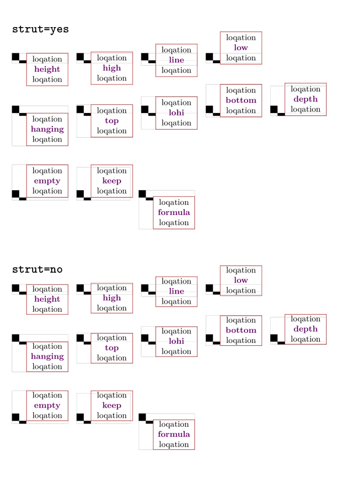
Similar topics
See also
- Category:Command/Frames
-
mp-cont.mpiv
for many variables allowed in metapost like
CutSpace,PaperHeight…